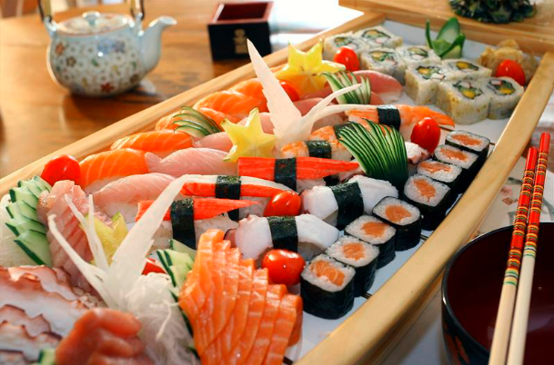

Avenida Iguaçu
Seu nome é uma homenagem ao maior rio do Paraná, o Iguaçu, que em tupi guarani significa Água Grande. No final dos anos de 1990, passou a receber um volume maior de restaurantes, principalmente os de culinária japonesa. Hoje, tem cardápios para todos os gostos e paladares, reunindo bares, casas de shows e restaurantes que servem carnes, massas, sushis, sashimis e rodízio de sopas.

Avenida Comendador Franco
Por ser o caminho de acesso ao aeroporto é uma boa dica para quem quer conhecer ou se despedir dos sabores de Curitiba. Na avenida há churrascarias e restaurantes de frutos do mar, quase todos servindo no sistema de rodízio.

Cabral
Sua grande característica é a diversidade. Fast foods, restaurantes japoneses, chineses, contemporâneos, italianos, pizzarias, cafés e padarias são opções que podem ser encontradas e saboreadas nesta rota.
Santa Felicidade
A região passou a ganhar as características atuais a partir de 1878, com a chegada das primeiras famílias de imigrantes italianos. O nome Santa Felicidade foi uma homenagem à proprietária das terras onde a colônia foi construída, Felicidade Borges, que facilitou muito a negociação. Por volta de 1940, a Avenida Manoel Ribas já era um importante ponto de ligação para os colonos que vendiam o que plantavam no Centro de Curitiba e para os viajantes que seguiam para o Interior do Paraná.
Aproveitando o tráfego de caminhões, algumas famílias passaram a servir, em casa e com hora marcada, a típica comida italiana e fizeram sucesso. A freguesia cresceu e nos anos de 1950 o improviso das casas deu lugar aos primeiros restaurantes que fazem de Santa Felicidade um dos mais famosos centros gastronômicos do Brasil. Hoje, na Avenida Manoel Ribas são encontrados vários tipos de restaurantes, mas sua grande marca são os rodízios italianos regados à polenta frita, escarola com bacon, frango prensado e à passarinho, risotos, lasanhas, macarronadas e nhoques.